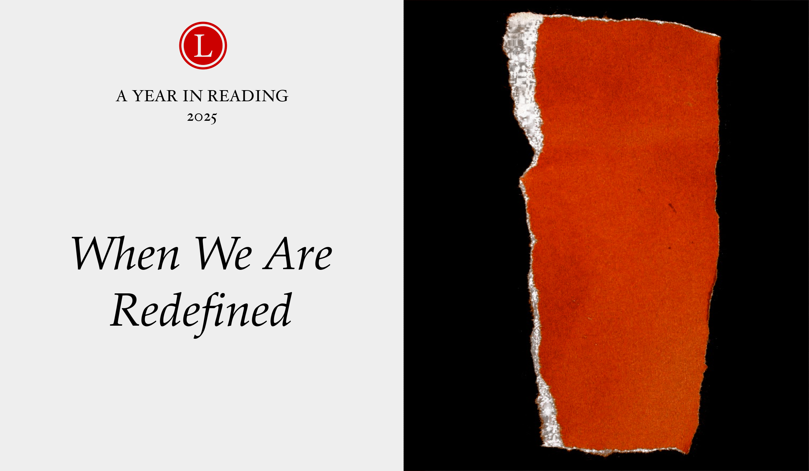

From bull rides to military parades, the world transforms us in surprising ways. The best stories get close enough to document our transformation.
Two images persist from my year of reading. The first, from J Wortham's "The Man in the New Boots", involves a bronze sculpture of Stonewall Jackson, the Confederate general, which stood for a century atop a pink granite plinth in Charlottesville, Virginia. Wortham followed the statue, removed after a violent white-supremacist rally, then acquired by an art curator and offered to the artist Kara Walker for transformation. Walker used a laser cutter to remove Jackson from his horse and then butchered the animal, reassembling their pieces into "a demented Rorschach test, a mangled mess of bronze arms and hoofs, tail and jaws." The pink granite plinth was given to another artist, Bethany Collins, who broke the massive object into pieces that she transformed into flower petals.
The second image comes from "The Man in the New Boots", an account of Chandler Fritz's decision to ride a bull at a rodeo in Phoenix, Arizona. The decision had come to Fritz fully-formed, a pre-packaged resolution. Caught without a cup, Fritz improvises, crafting one from a jockstrap and a child-sized shin guard before mounting Babyface, his steer. From his place inside the chute, Fritz hears a chorus of voices—God, a rodeo clown, ZZ Top—before the chute boss cuts through, telling Fritz, "Move your dick up." Fritz scoots, and the bright pink of the shin guard erupts from his pants, disgusting the chute boss. "A perversion," Fritz writes, in the instant before the steer carries him off, "is a turn from a previous path to meaning. It is the betrayal of an exact course."
When the world redefines us
An odd pairing, I know. And yet there's more material running between these two images than a flash of pink, or being tossed from the powerful back of a beautiful creature. Each story, in its own way, is about the human capacity for redefinition. I see traces of that same capacity throughout the stories I loved this year.
Perhaps that's not surprising. This year has been one of redefinitions, many of them orchestrated by powerful figures, often with violence. In the US, they include efforts to rename the Gulf of Mexico, to mobilize military personnel against civilians, to restrict personal identity. Days after Donald Trump deployed the National Guard to subdue protests in Los Angeles over mass deportations, the US convened its first major military parade in decades, on the president's birthday. The timing of it all is reason enough to ask what a military parade in America is for, and what such pageantry means for our notions of democracy. "Whatever else it might be, a military parade is always a reminder of how readily the armed forces can be deployed both at home and abroad," Linda Kinstler writes in "Phorm Energy Screamin' Freedom," her searing dispatch from the event. There is a difference between a democracy with military parades and a democracy without.
Perpetual proximity to violence can transform who we are, even if that violence never touches us as directly as others. In “Fear and Trembling in the Garrison,” Theo Lipsky, a US Army captain, meditates on ammunition guards, peacetime soldiers who take shifts protecting weapons. Lipsky is less interested in valorizing military service than he is in investigating the “great spiritual movements” accessible to such guards, who are “reconciled to peace but ready to receive war when it comes as if it were inevitable.” His guards aren’t metaphorical: Lipsky has served the same shifts, seen his fantasies dissolve, and felt the futility of the work take hold. And while his study of readiness and faith fixes on the ammunition depot, I see its match in the unending ranks of the big-hearted and just who devoted this year to safeguarding their neighbors and families against oppressive forces—work they once had never imagined. An example? Glad you asked. Try “The Xi Jinping School of Journalism,” Soyonbo Borjgin's account of his career at The Inner Mongolia Life Weekly—it's an exceptional document of personal change: Borjgin, once a bumbling cub reporter, gains his footing as a features writer as the Chinese Communist Party cracks down on Mongolian language education, twin stories that eventually converge. His chronicle is a hoot until it isn't; we are rarely in control of the circumstances that redefine us: Borjgin, now in the US, can't find decent work despite his background, and may not see his parents again. Instead of a feel-good survival story, we have something simpler and more remarkable, a tale of a transformed consciousness, conflicted and honest.
But we are surrounded by more than darkness, and transformed by more than violence. So here's where things take a turn.
Twice this year, I was awestruck by Lily Scherlis, whose essays for Harper's and n+1 each dealt with the complexities of human relationships. For her most astonishing work, "Experiences in Groups," Scherlis devoted two weeks to "group relations," a social experiment she likens, at times, to "a kind of libidinal dodgeball; we pelt each other with hurtful mischaracterizations and pleas for connection." The goal, she writes, "is neither conflict nor catharsis but understanding," a way of preparing the self for better engaging with others. At first, Scherlis's encounters in group relations struck me as darkly comic, discomfiting to the max. ("You look lost," one participant tells her. "But maybe you are holding the part of me that is lost.") But then, what do I expect of the people around me? Collectivism is messy work. "The truth," Scherlis writes, "is that you cannot not be in a group." We are always in relation to each other, even when we have pushed each other away.
Our experiences play out mostly on the human scale. We make sense of our times—and ourselves—through the people around us. Other people are our portals to understanding, maybe even to redefinition.
This year, in my favorite stories, someone was always watching someone else with devotional interest. In "Nights and Days," it's Henri Cole, crawling on the floor with James Merrill, desperately seeking a dropped letter that might hold some grim news about Merrill's health. ("It's only the Stonington telephone bill!") In "The Good Pervert," it's David Velasco, whose friendship with Brent Sikkema, the art dealer murdered in 2024, offered him a model of a person "fully committed to his values and his pleasures; unlike most people, he didn't see a contradiction between the two."
The people closest to us aren't always sunny. Just take "The Talented Ms. Highsmith," Elena Gosalvez Blanco's chilling account of her time as an assistant to the novelist, renowned for her thrillers and for her misanthropy. Alone with Highsmith in her home, Blanco was controlled and monitored; perhaps Highsmith loved her, she wondered, or wished to kill her. From time to time, I think of the two of them, watching each other across the courtyard of Highsmith's home—perilously close, in a sense, and extraordinarily remote in another.
Yet no matter what else it is, paying close attention to another person is an act born from deep curiosity—an effort to answer a question about where you end and they begin. Take "My Mom and Dr. DeepSeek," Viola Zhou's study of her ailing mother, who forgoes an indifferent healthcare system for the assurances of a chatbot. Zhou's essay is one of the few I enjoyed this year about the ways generative AI is reshaping human life. I think the reason is simple: Zhou is close enough to her mother to understand—and to reveal to us—how she has changed.
If you've come this far, then you know this already, but it still bears saying: We read about the lives of others to test the boundaries of our own. We spend so much of our lives enclosed in our own heads. It would be a grim thing never to let anyone in; "be yourself" becomes a meaningless mantra when you exclude everyone else.
Maybe that's the current I see running through those two opening images: Fritz on his steer, Wortham with a reconfigured Confederate statue. In each story, something settled—the power of a symbol, the predictable trajectory of a life—has become unsettled, briefly or permanently.
Fritz writes of pumping gas and staring at a familiar mountain range and knowing the bounds of his world thoroughly—"the way I had always determined to know the world"—only to veer off-course. We never see Fritz leave the bucking chute because the steer isn't the point. He has already ridden away from the world as he once knew it.
Wortham, meanwhile, writes with embodied clarity about the pink-granite flower metals carved from the Jackson statue's century-old plinth: "I marveled at seeing something so masculine and violent be reformed with beauty and gentleness," Wortham writes. "But the piece produced a tinge of fear in me, too—a fear of hoping too hard that such a metamorphosis was possible, or could be permanent."
"Permanent" is a distant horizon, of course. But "possible" is in the room with us, if we're open to it. "This is what good art does," a curator tells Wortham, at just the right moment. "It gives something another form."
Tagged: best-of-2025, Chandler Fritz, David Velasco, Elena Gosalvez Blanco, Equator, Harper's, Henri Cole, J Wortham, Lily Scherlis, Linda Kinstler, n+1, Rest of World, Soyonbo Borjgin, The New York Review of Books, The New York Times Magazine, The Paris Review, The Point, theo lipsky, Viola Zhou, Yale Review